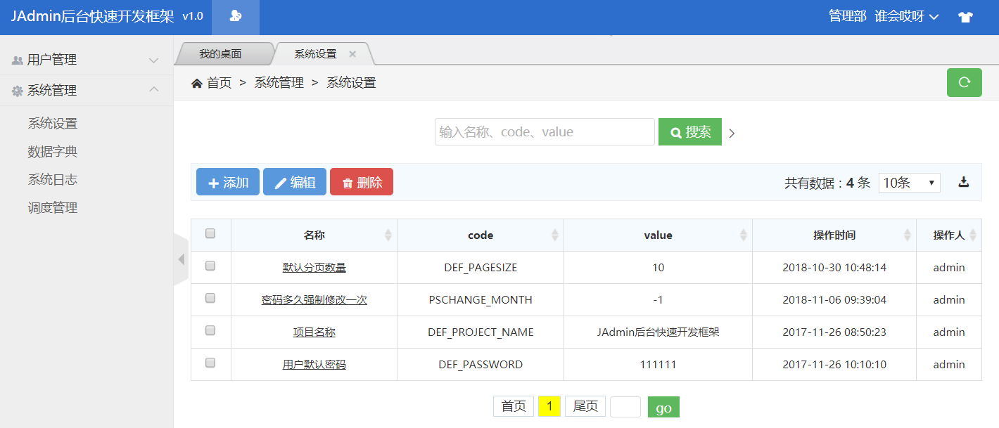
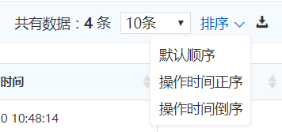

JAdmin核心功能就是快速实现对数据表的增删改查操作，接下来已sys_config系统配置表为例，为大家讲解列表页面的使用。
列表页面需要一个JavaBean类和一个Controller类。
JavaBean需要继承AbstractValueObject类，代码如下：
@Entity @Getter @Setter
@Table(name = "sys_config")
public class ConfigVO extends AbstractValueObject {
/** 序列号 */
private static final long serialVersionUID = 1l;
@Id
@GeneratedValue(generator = "system-uuid")
@GenericGenerator(name = "system-uuid", strategy = "uuid")
@Column(length = 32)
public String configId;
@Column(length = 128)
private String name;
@Column(length = 128)
private String code;
@Column
private String coValue;
@Column(length = 1)
private String isOpen;
@Column(length = 19)
private String operateTime;
@Column(length = 32)
private String operatorId;
@Column(length = 1)
private String billStatus;
@Column(length = 512)
private String memo;
@Override
public String getPrimaryKey() {
return configId;
}
public void setPrimaryKey(String key) {
this.configId = (String) key;
}
}
Controller需要继承CommonListController《T extends AbstractValueObject》类，代码如下：
@Controller
@RequestMapping("/config") // 定义前台url访问的基础路径
@AdminPage(menu = AdminPageMenu.baseCenter, name = "系统设置") // 将页面注入到菜单
public class ConfigController extends CommonListController {
@TableColumn(value = "名称", search = true)
public String name;
@TableColumn(value = "code", search = true)
public String code;
@TableColumn(value = "value")
public String coValue;
@TableColumn(value = "操作时间")
public String operateTime;
@TableColumn(value = "操作人")
public String operatorId;
}
页面显示如下图所示：
列表页面可以不注入到菜单里面，单独来使用。列表页面的url路径为：{RequestMapping-value}/getAll
列表页面有以下注解可以配套使用：
| 注解名称 | 使用对象 | 用途说明 |
|---|---|---|
| @FileConfig | 类注解 | 页面对应的jsp和js的设置，可以自定义jsp页面，也可以嵌入指定的js |
| @AdminPageNoButton | 类注解 | 声明页面中不需要的button，默认显示删除、添加、编辑 3个按钮 |
| @DeleteMode | 类注解 | 定义删除的策略 真删还是修改状态 |
| @TableHql | 类注解 | 定义列表界面的where条件和 排序 |
| @Power | 类注解 | 列表页面数据的权限过滤策略，子机构只能看到自己的数据，父机构能够看到自己和子机构的数据 |
| @SearchMode | 类注解 | 定义搜索策略，默认使用精简搜索模式 |
| @InitNoData | 类注解 | 声明该注解之后，列表界面默认没有数据，搜索后才会显示 |
| @SinglePage | 类注解 | 声明后为单个页面，直接跳转到编辑页面，而不是列表页面 |
| @Tree | 类注解 | 声明是属性结构的列表界面 |
| @TableColumn | 字段注解 | 用来定义列表页面显示的字段 |
| @OrderByColumn | 字段注解 | 声明该注解，可給据该字段排序 |
| @SearchColumn | 字段注解 | 如果要使用更复杂的搜索功能，或者是字段不在表格中显示，确需要在搜索组件中显示，可以使用只SearchColumn注解 |
@AdminPageNoButton、@InitNoData、@OrderByColumn相对简单，这里不再讲解。
@FileConfig注解，可以自定义jsp页面，也可以嵌入指定的js，注解参数详细介绍：
| 参数名称 | 参数类型 | 默认值 | 参数说明 |
|---|---|---|---|
| selfJsp | String[] | {} | 需要自定义的jsp，可自定义的jsp有 list、edit； 默认为空，将使用通用的admin/common/*.jsp； 如果声明list为自定义，将使用admin/business/{url}/data-list.jsp页面； 如果声明edit为自定义，将使用admin/business/{url}/data-edit.jsp页面； |
| jspBaseUrl | String | 空 | 定义后将使用该路径作为jsp基础路径，默认路径是admin/business/{url} |
| editJs | String | 空 | edit需要特殊加载的js |
| listJs | String | 空 | list需要特殊加载的js |
@DeleteMode注解，定义删除的策略，真删还是修改状态，注解参数详细介绍：
| 参数名称 | 参数类型 | 默认值 | 参数说明 |
|---|---|---|---|
| value | int | 无默认 | 删除策略 DeleteMode.DELETE为真删，DeleteMode.UPDATE为更新状态 |
| updateKey | String | isDelete | 更新状态策略时有效，定义給据哪个字段更新 |
| updateValue | String | 1 | 更新状态策略时有效，删除状态对应的值 默认1 |
@TableHql注解，定义列表界面的where条件和 排序，注解参数详细介绍：
| 参数名称 | 参数类型 | 默认值 | 参数说明 |
|---|---|---|---|
| value | String | 空 | 列表界面的where条件 |
| orderBy | String | 空 | 列表界面排序 |
| pageSize | int | -1 | 定义分页的大小，默认-1将使用系统配置“DEF_PAGESIZE”的值 |
@Power注解，定义数据权限，注解参数详细介绍：
| 参数名称 | 参数类型 | 默认值 | 参数说明 |
|---|---|---|---|
| value | int | ORG | 数据权限策略，Power.ORG表示显示当前机构和子机构的数据，Power.SELF_ORG表示显示当前机构的数据，Power.USER表示显示当前用户的数据 |
| orgKey | String | org.seq | Power.ORG时有效，当前vo所对应机构的seq的属性 |
| userKey | String | 空 | Power.USER时有效，当前vo所对应用户的属性 |
@SearchMode注解，定义搜索策略，注解参数详细介绍：
| 参数名称 | 参数类型 | 默认值 | 参数说明 |
|---|---|---|---|
| defType | int | EASY_TYPE | 搜索的模式 SearchMode.EASY_TYPE-精简搜索，SearchMode.COMPLEX_TYPE-复杂搜索 |
| dateColumn | String | 空 | 声明该字段后，将会显示一个日期范围的搜索组件 |
| pageSize | String | yyyy-MM-dd | 日期的类型，dateColumn不为空时有效 |
@SinglePage注解，声明后为单个页面，直接跳转到编辑页面，而不是列表页面，注解参数详细介绍：
| 参数名称 | 参数类型 | 默认值 | 参数说明 |
|---|---|---|---|
| value | String | 空 | 单个页面配置属性，值为该vo的主键，可使用关键词：userId, orgId，表示的是当前登陆用户的id和机构id |
@Tree注解，声明是属性结构的列表界面，注解参数详细介绍：
| 参数名称 | 参数类型 | 默认值 | 参数说明 |
|---|---|---|---|
| sql | String | SELECT seq id, orgFSeq pId, name FROM sys_org where isDelete = 0 and billStatus = 1 | 如果不是通过方法自定义数据，将使用sql自定义树的json数据里面的必填字段有： id 节点id name 节点名称 选填字段有： pId 所属父节点 如果顶级节点，设置为0（可选，为空表示只是一级结构） rId 如果rId存在，id只负责和pId对应，选择后保存的值是rId nocheck 如果为false或者0，该节点不能被选中（nocheck属性同样支持selectCode，但是只支持动态的数据词典） |
| selectCode | String | 空 | select类型的数据词典，如果该字段不为空，将无视sql |
| fieldKey | String | org.seq | 当前vo所对应的关键词，默认是 like 匹配，如果需要特殊处理，可重新getTreeHqlWhere方法 |
| jsonKey | String | id | 点击tree的节点之后，传递到后台的值，默认传递id |
| methodCustom | boolean | false | 是否需要通过方法 自定义树的json数据，通过重新getTreeData方法来实现自定义 |
@TableColumn注解，来定义页面中显示的字段，注解参数详细介绍：
| 参数名称 | 参数类型 | 默认值 | 参数说明 |
|---|---|---|---|
| value | String | 空 | 字段的名称，如果为空将使用FormColunm的value值 |
| column | String | 空 | 对应的JavaBean字段，默认使用的是变量的值，不需要定义。如果是多/一对一里面另一个对象的属性，可以填写{对象名}.{属性} |
| selectCode | String | 空 | select类型的数据词典，比如性别数据库里面存的是0/1，在这里填写sex，界面会显示男/女 |
| img | boolean | false | 是否是图片，如果是true，该列将显示为图片 |
| videoPath | String | 空 | 视频的路径，如果是视频，该列将img作为缩略图显示，点击后会播放视频 |
| maxLength | int | -1 | 显示的最大长度，默认 显示全部 |
| search | boolean | false | 是否在搜索组件中显示 |
| javaType | JavaType | JavaType.String | 搜索字段，查询时的Java类型 |
| exportColumn | String | 空 | 导出时用的字段，为空将默认column |
| export | boolean | true | 字段是否可以导出 ，默认导出 |
@SearchColumn注解，可以单独定义搜索组件，注解参数详细介绍：
| 参数名称 | 参数类型 | 默认值 | 参数说明 |
|---|---|---|---|
| value | String | 空 | 字段的名称，如果为空将使用FormColunm的value值 |
| column | String | 空 | 对应的JavaBean字段，默认使用的是变量的值，不需要定义。如果是多/一对一里面另一个对象的属性，可以填写{对象名}.{属性} |
| selectCode | String | 空 | select类型的数据词典，比如性别数据库里面存的是0/1，在这里填写sex，界面会显示男/女 |
| javaType | JavaType | JavaType.String | 搜索字段，查询时的Java类型 |
| initDefault | String | 空 | 搜索的初始值，默认列表界面查询时，会加上改值 |
| initDefaultMethodGet | boolean | false | 搜索的初始值，如果为true，说明需要初始化值，值为通过get方法获取 |
可以通过application.yml的jadmin.adminPage参数，设置页面的显示顺序：
#该属性为后台页面的显示顺序，写在前面，就显示在前面 adminPage: #List - 角色管理 - 用户管理 - 系统设置 - 数据字典 - 系统日志